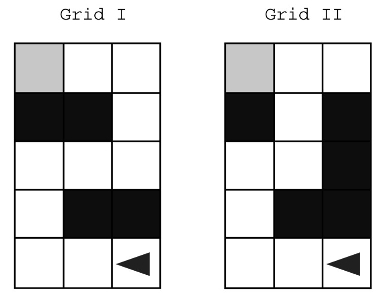

Two grids are shown below. Each grid contains a robot represented as a triangle. Both robots are initially facing left. Each robot can move into a white or gray square, but cannot move into a black region.

For each grid, the program below is intended to move the robot to the gray square. The program uses the procedure Goal_Reached (), which evaluates to true if the robot is in the gray square and evaluates to false otherwise.
- REPEAT UNTIL (Goal_Reached ())
- {
- IF (CAN_MOVE (right))
- {
- ROTATE_RIGHT ()
- }
- ELSE
- {
- IF (CAN_MOVE (left))
- {
- ROTATE_LEFT ()
- }
- }
- IF (CAN_MOVE (forward))
- {
- MOVE_FORWARD ()
- }
- }
For which of the grids does the program correctly move the robot to the gray square?